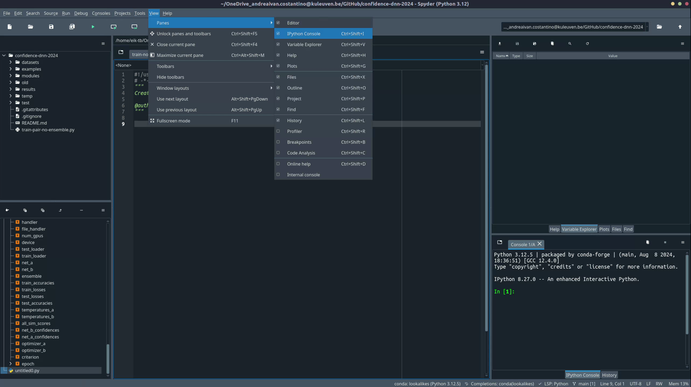
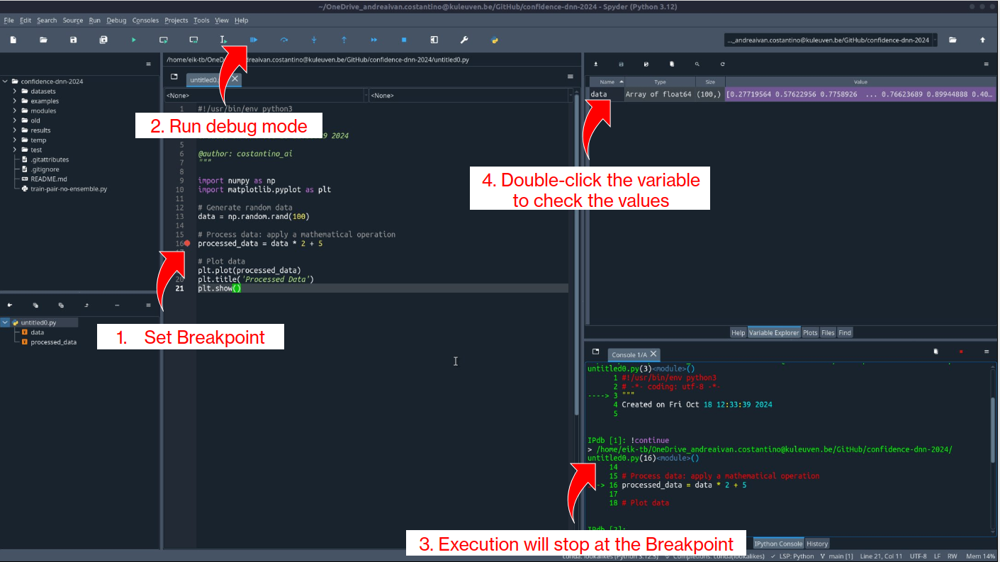
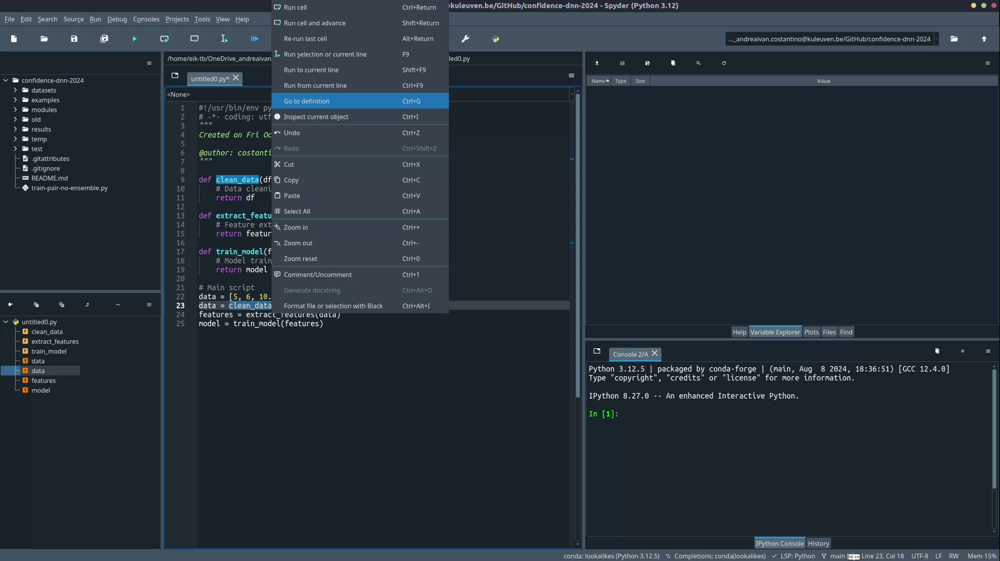

Coding Practices¶
Welcome to the Coding Practices section! Here, you'll find essential guidance for setting up your coding environment, managing projects, collaborating using GitHub, and following best practices to write clean, maintainable code.
-
Good coding practices
In the lab, we aim to build tools that are reproducible, reusable, and efficient. Learn more about our general approach to building and managing projects. -
Setting Up Your Project
Every new project starts with the right environment setup. Find out how to create a proper environment for your coding projects. -
Understanding Your Code
Encountering inexplicable errors? Want to know what data are you plotting? Don't know how to use a misterious function? Learn how to effectively debug your code using Spyder’s powerful tools. -
Using Version Control
Discover how to integrate Git and GitHub into your workflow to keep track of changes and collaborate with ease.
Why Coding Practices Matter¶
When you code for your research project, remember that you're not just coding for yourself today—you’re coding for:
- Your future self: Six months from now, you might not remember the specifics of your current project.
- Other scientists: Your code might be used or reviewed by researchers with varying coding skills and backgrounds. Writing clean and well-documented code ensures that your work can be understood and built upon by others.
Keeping your code tidy, easy to understand, and maintainable is crucial for effective research collaboration and aligns with the principles of Open Science.
Recommended Resources¶
Make sure to explore our suggested Coding Tutorials. We especially recommend The Good Research Code Handbook, which provides valuable insights into writing robust research code. Key sections include Writing Decoupled Code and Keeping Things Tidy.
By following these practices, you'll not only improve the quality of your research code but also make it easier to share your work with others, enhancing transparency and reproducibility. Invest time in reading and practicing. Developing good coding habits will pay off in the long run by making your work more efficient, easier to understand, and more valuable to the research community. Happy coding!
Tip
If you're new to coding and many of the terms on this page seem unfamiliar, start by exploring some of the essential tools you’ll use. Check out tutorials on Python, Git, and the Unix Shell on the Student Starter Pack page.
What if I code in MATLAB?
While the information in this page focuses on Python, the principles of writing clean, maintainable code are universal. Debugging, structuring code, and organizing projects apply just as much to MATLAB as they do to Python. Be sure to apply these practices regardless of the language you're using!
Special Note for fMRI Projects¶
If you're working on fMRI projects, you’ll find specific information on setting up your environment in the Set-up your Environment page of the fMRI section. This guide includes additional tips for managing data and code in neuroimaging research.
Best Practices for Organizing Code and Projects¶
A well-structured project helps in maintaining readability and collaboration. Here are some recommendations:
1. Folder Structure¶
Use a logical structure for your project files:
my_project/
├── data/ # Raw data files
├── modules/ # Scripts to store your classes and functions
├── results/ # Output results and figures
├── environment.yml # Conda environment file
└── README.md # Project overview
2. Naming Conventions¶
- Files: Use lowercase letters with underscores (e.g.,
data_processing.py). - Folders: Use meaningful names that reflect their contents.
- Variables: Use descriptive names (e.g.,
participant_idinstead ofid).
3. General Coding Tips¶
Tip
Write modular code by breaking down tasks into functions and classes. This approach enhances reusability and readability.
- Avoid "Spaghetti Code": Keep functions short and focused.
-
Use Docstrings to document functions and classes:
-
Follow PEP 8: Use tools like
blackto ensure code style compliance.
4. Saving Results¶
Organizing your results properly is crucial for reproducibility, collaboration, and long-term maintainability of your research code. This section covers how to structure your results folders, save scripts and logs, and use utility functions to streamline these processes.
To keep your project organized, we’ve provided a set of utility functions that automate common tasks like setting random seeds, creating unique output directories, saving scripts, and configuring logging. These functions should be defined in a separate file called utils.py located in the modules/ directory of your project.
Utility Functions in modules/utils.py
The following functions are defined in modules/utils.py (see the box below for the definitions):
set_random_seeds(seed=42): Sets random seeds for reproducibility.create_run_id(): Generates a unique identifier based on the current date and time.create_output_directory(directory_path): Creates a directory for saving results.save_script_to_file(output_directory): Saves the executing script to the output directory.setup_logger(log_file_path, level=logging.INFO): Configures logging to log both to the console and a file.
| modules/utils.py | |
|---|---|
1 2 3 4 5 6 7 8 9 10 11 12 13 14 15 16 17 18 19 20 21 22 23 24 25 26 27 28 29 30 31 32 33 34 35 36 37 38 39 40 41 42 43 44 45 46 47 48 49 50 51 52 53 54 55 56 57 58 59 60 61 62 63 64 65 66 67 68 69 70 71 72 73 74 75 76 77 78 79 80 81 82 83 84 85 86 87 88 89 90 91 92 93 94 95 96 97 98 99 100 101 102 103 104 105 106 107 108 109 110 111 112 113 114 115 116 117 118 119 120 121 122 123 124 125 126 | |
Using the utility functions in a script
To use the functions defined in utils.py, import them in your script and follow the example below. This will ensure reproducibility and proper organization of your experimental results.
Example Results Folder Structure
After running the script, your results might be structured as follows:
results/
├── 20241018-153045_train-pair-temp-ws-softmax_proba-0.2_probb-0.2_probtest-0.6_tempa-0.1_tempb-5_lr-1e-5/
│ ├── log_output.txt # Logs of the run
│ ├── main_script.py # Copy of the script that generated the results
│ ├── output_data.csv # Output data generated by the run
│ └── model_weights.pth # Saved model weights
Why Create a results Folder for Each Run?
- Reproducibility: Ensures that each set of results corresponds to a specific code version and parameters.
- Comparison: Makes it easier to compare results between different runs with varying parameters.
- Organization: Keeps your project clean by preventing files from different experiments from mixing together.
With these functions, you can ensure a well-organized, reproducible workflow, making it easier to manage long-term research projects and collaborate with others.
Setting Up a Conda Environment¶
Using isolated conda environments ensures that each project has the specific dependencies it needs without conflicts. Follow the steps below to create and manage your environments.
1. Install Anaconda/Miniconda¶
Download and install Miniconda or Anaconda.
What's the difference?
- Miniconda is a minimal version that includes only
condaand Python, allowing you to install only the packages you need. - Anaconda comes with a full suite of pre-installed packages like
numpy,pandas,scipy, and many others, and with a GUI to manage packages and environments.
- Download the installer from the Anaconda website.
- Run the Installer: Double-click the
.exefile and follow the installation wizard. - Add Conda to PATH: During installation, check the box that says "Add Anaconda to my PATH environment variable" if you plan to use
condadirectly from the command prompt.
Warning
Adding Anaconda to PATH can sometimes cause conflicts with other software. Only do this if you are familiar with PATH management.
- Download the installer from the Anaconda website.
- Run the Installer: Open the downloaded
.pkgfile and follow the installation instructions. - Verify Installation:
-
Download the installer script from the terminal:
-
Run the Installer:
-
Follow the prompts: Accept the license terms, specify an installation path, and allow the installer to initialize
conda. -
Activate changes:
Info
Make sure to replace <version> with the correct version number of the Anaconda installer.
2. Create and Manage a Conda Environment¶
-
Create a new environment: Use the following command to create a new environment. Replace
myenvwith the name of your environment: -
Activate the environment:
-
Install packages: Install necessary packages, e.g.,
numpy,pandas, andmatplotlib: -
Export environment for reproducibility: Save your environment to a file:
This allows others to recreate your environment with:
-
Open Anaconda Navigator: Launch the Anaconda Navigator from your start menu.
-
Create a new environment:
- Go to the "Environments" tab.
- Click on "Create" and give your environment a name (e.g.,
myenv). - Select the desired Python version.
-
Install packages:
- With your environment selected, click on "Not installed" to view available packages.
- Search for the packages (e.g.,
numpy,pandas) and install them by checking the boxes and clicking "Apply".
Setting Up Spyder for Python Projects¶
Spyder is a powerful IDE for scientific programming in Python. Here’s how to set it up:
1. Install Spyder¶
2. Create a Project in Spyder¶
Why use Spyder projects?
Using a project allows Spyder to set the root folder for your scripts. This means that all imports and file paths are relative to this root, simplifying package management and file organization.
-
Create a New Project:
- Go to
File > New Projectin Spyder. - Select a directory to store your project files.
- Spyder will set this folder as the root for relative imports.
- Go to
-
Organize Your Project:
- Use a structure like this:
-
Activate Your Environment in Spyder:
- Go to
Preferences > Python Interpreter. - Select the interpreter from your
condaenvironment.
- Go to
Understanding your code¶
Spyder offers powerful tools for debugging, understanding, and navigating your code. Here’s an in-depth guide on how to leverage these features, with examples to make each step clear and actionable.
Viewing All Panes in Spyder¶
Before diving into debugging and navigation, it's important to set up your Spyder workspace for maximum efficiency. Spyder's default layout includes several panes that provide valuable insights into your code's execution and structure.
-
Accessing the View Menu:
- Go to
View > Panesto see a list of available panes. - The most useful panes include:
- Editor: This is where you write your code.
- IPython Console: Allows you to run commands interactively.
- Variable Explorer: Displays all variables in your current environment.
- Documentation: Shows documentation for selected functions and objects.
- File Explorer: Browse files and folders in your working directory.
- Breakpoints: Manage and navigate all breakpoints in your code.
- Go to
-
Enable Recommended Panes:
- Ensure that the Variable Explorer, IPython Console, Breakpoints, and Documentation panes are enabled.
- This setup will help you keep track of variables, navigate breakpoints, and access function documentation easily.

Understanding the Code by Debugging¶
Using breakpoints and Spyder's debugging tools allows you to:
- Pause code execution and inspect variables at critical points.
- Step through code line-by-line to understand how each operation transforms the data.
- Use the Variable Explorer for a visual overview of complex data structures.
- Run quick checks in the IPython console for on-the-fly validation.
These tools are crucial for identifying and fixing bugs in your scripts, whether you're working with simple calculations or more complex data processing tasks. By mastering them, you'll save time and gain deeper insights into your code's behavior.
Best Practices for Debugging
- Use Breakpoints Strategically: Place breakpoints at critical points in your code to verify data at those stages.
- Step Through Loops: Use "Step Over" and "Step Into" to see how data changes inside loops.
- Log Important Values: If you’re debugging a specific issue, add print statements to log values at various points.
Example Scenario: Debugging a Simple Calculation Script
Let’s say you have a script that generates some random numbers, processes them by applying a mathematical operation, and then plots the result. You want to ensure that the numbers are correctly generated and processed before they are plotted. Here’s how you can use breakpoints to achieve this:
import numpy as np
import matplotlib.pyplot as plt
# Generate random data
data = np.random.rand(100)
# Process data: apply a mathematical operation
processed_data = data * 2 + 5
# Plot data
plt.plot(processed_data)
plt.title('Processed Data')
plt.show()
1. Adding a Breakpoint¶
- Set a breakpoint on the line where
processed_datais calculated by clicking in the left margin next to the line or using:- Windows/Linux:
Ctrl + B - Mac:
Cmd + B
- Windows/Linux:
The line will be highlighted in red, indicating that the breakpoint is active.
Why use this?: This breakpoint allows you to pause before processed_data is calculated, so you can inspect the data values and verify that the generated numbers look as expected before the transformation is applied.
2. Running Code in Debug Mode¶
Start debugging by clicking the "Debug" button (bug icon) in the Spyder toolbar or pressing F5.
- The execution will pause when it reaches the breakpoint on processed_data = data * 2 + 5.
- Once paused, you can:
- Step into a function (
Ctrl + F11): This allows you to step inside any function calls to see how they operate internally. - Step over (
Ctrl + F10): This moves to the next line without diving into the details of function calls—ideal for quickly advancing through simpler lines. - Continue (
Ctrl + F12): Resumes execution until the next breakpoint or the end of the script.
- Step into a function (
Why use this?: Step-by-step execution helps you isolate logical errors or verify how variables change through different stages, especially when debugging a transformation or complex calculation.
3. Inspecting Variables During Debugging¶
-
With the code paused at the breakpoint, use the Variable Explorer to examine the contents of
data:- Look at the array of generated numbers to ensure they are within the expected range (0 to 1 since
np.random.rand()generates random floats). - After confirming the raw
data, proceed with the next step to see howprocessed_datachanges.
- Look at the array of generated numbers to ensure they are within the expected range (0 to 1 since
-
Double-click on
datain the Variable Explorer to open a detailed view, allowing you to see the entire array and verify its values.
Why use this?: It allows you to visually inspect the contents of arrays, lists, or other data structures without needing to add print statements. This can be especially useful for quickly understanding the state of your data at different points.

4. Using the Console for Interactive Debugging¶
-
While debugging, you can interact with variables directly in the IPython console to verify specific values or perform calculations without modifying the script.
-
Example: To see the first few values of
This will print the first 10 values of thedata, type:dataarray in the console, allowing you to confirm that the random numbers are as expected. -
Another Example: Check the shape of
datato ensure it has the correct number of elements:
Why use this?: This feature allows you to perform ad-hoc checks on variables or run quick tests without altering your script, which is useful for exploring potential issues during debugging.
Understanding by Looking at Definitions¶
Spyder makes it easy to navigate large codebases and understand how functions, classes, and variables are connected. Using features like "Go to Definition," "Find References," object inspection, and the Documentation Viewer, you can explore and manage complex projects more efficiently.
Pro Tips for Code Navigation
- Use "Go to Definition" to trace complex functions: This helps you see the original implementation without scrolling through files.
- Use the Variable Explorer for quick checks: It’s a faster way to spot-check variables rather than adding numerous print statements.
Overview:
The Go to Definition feature allows you to quickly jump to where a function, class, or variable is defined. This is especially useful when working with large scripts or when using functions imported from other files or libraries. Instead of scrolling through the code to find a definition, you can directly jump to it.
- How to Use: Right-click on the function or class name and select "Go to Definition" or use the shortcut:
- Windows/Linux:
Ctrl + G -
Mac:
Cmd + G -
Why use this?: This feature saves time and makes it easier to understand how a function or class is implemented without losing context in your main script.
Example Scenario: Navigating a Machine Learning Pipeline
Suppose you have a script with multiple functions for data cleaning, feature extraction, model training, and evaluation. Using "Go to Definition," you can quickly jump between functions to understand the flow of your code.
def clean_data(df):
# Data cleaning logic
return df
def extract_features(df):
# Feature extraction logic
return features
def train_model(features):
# Model training logic
return model
# Main script
data = clean_data(data)
features = extract_features(data)
model = train_model(features)
- Scenario: You want to see the logic inside
clean_datawhile working on the main script.- Right-click on
clean_dataand select "Go to Definition." - Spyder will take you directly to where
clean_datais defined, allowing you to review the function without scrolling.
- Right-click on

Understanding by Inspecting¶
Overview: Spyder’s object inspection feature allows you to explore the attributes and methods of objects directly within the editor. This is particularly useful when working with unfamiliar libraries or custom classes, as it enables you to see what functions or properties are available and how to use them. This feature can be a lifesaver when you encounter a function with unclear parameters or complex behavior.
- How to Use: Select an object or function in the editor and press:
- Windows/Linux:
Ctrl + I -
Mac:
Cmd + I -
Why use this?: This feature provides a quick way to understand the capabilities and usage of an object or method without needing to look up documentation online. It can save time when learning new libraries or debugging issues with complex data structures.
Example Scenario: Inspecting a NumPy Function
Suppose you want to generate a set of random integers using the np.random.randint function, but you’re not sure about its input arguments and what it returns. You can use Spyder’s object inspection to quickly get this information without leaving the IDE.
import numpy as np
# Generate random integers between 0 and 10
random_numbers = np.random.randint(0, 10, size=100)
-
Scenario: You want to know what arguments
np.random.randintaccepts and how to use it properly (e.g., what issize, and can you generate a 2D array?). -
Step 1: Select the Function: Highlight
np.random.randintin the editor. -
Step 2: Press the Shortcut: Use
Ctrl + I(Windows/Linux) orCmd + I(Mac) to bring up the documentation in the Help pane. -
What You See: The documentation for
np.random.randintappears, showing:- Input Arguments: The range of integers (
lowandhigh),sizefor specifying the shape of the output array, and other optional parameters. - Description: An explanation of what the function does—generating random integers within a specified range.
- Returns: Information on what the function outputs (an array of integers).
- Examples: If available, code snippets showing how to use the function.
- Input Arguments: The range of integers (
-
Why use this?: This allows you to quickly understand how to use
np.random.randintwithout having to search online. You can verify if the function supports multi-dimensional arrays by checking thesizeparameter.
Version Control with Git and GitHub¶
Version control is crucial for collaborative coding and tracking changes in your projects. Here’s how to set up and use Git and GitHub, including practical tips for effective collaboration.
For a beginner-friendly guide, with explanation on main steps and terminology see this page.
1. Install Git¶
- Download the installer from the Git website.
- Follow the installation wizard, using default options.
- Install via Homebrew:
- Alternatively, download the Git installer.
2. Configure Git¶
Set up your Git identity using the following commands:
3. Using GitHub¶
- Download GitHub Desktop.
- Sign in with your GitHub account.
- Clone a Repository:
- Go to
File > Clone Repositoryand enter the repository URL.
- Go to
- Commit Changes:
- Make changes to files, then click
Committo save a snapshot of your changes.
- Make changes to files, then click
- Push to GitHub:
- After committing, click
Pushto sync changes with GitHub.
- After committing, click
4. Workflow Tips for Effective Collaboration¶
-
Always Pull Before Making Changes:
- Before starting any work, ensure your local repository is up-to-date with the latest changes:
- This prevents merge conflicts and keeps your local version in sync with the remote repository.
-
Typical Workflow:
- Fetch Updates:
- Pull Latest Changes:
- Make Edits: Modify files as needed.
- Stage Changes:
- Commit Changes with a clear message:
- Push to Remote:
-
Commit Often, but Meaningfully:
- Frequent commits help track your progress, but ensure each commit is meaningful and descriptive.
Common Git Issues¶
Merge Conflict
Issue: This occurs when changes are made in the same part of a file in both the local and remote versions.
Solution:
- Resolve the conflict manually in the affected file.
- Stage the resolved file:
Detached HEAD
Issue: Happens when you are not on a branch but on a specific commit.
Solution: - Switch back to your branch:
Push Rejected
Issue: Your push was rejected because the remote has changes that you don't have locally.
Solution: - Pull the latest changes, resolve any conflicts, and try pushing again:
Failed to Push Some Refs
Issue: Occurs when there are changes on the remote that need to be merged before pushing.
Solution: - Run:
- This replays your changes on top of the pulled changes and then allows you to push again.Changes Not Staged for Commit
Issue: Files were modified but not added to the staging area.
Solution: - Add the changes to the staging area:
- Or add all changes:File Deleted Locally, But Not in Remote
Issue: A file was deleted locally but still exists in the remote repository.
Solution: - To stage the deletion:
- Commit and push the change:Authentication Failed
Issue: This happens if your credentials are incorrect or have expired.
Solution: - Update your Git credentials:
- Re-run thegit push command, and enter your credentials when prompted.
Branch Not Found
Issue: Occurs when you try to checkout a branch that doesn’t exist locally or remotely.
Solution: - Create the branch:
- Or fetch all remote branches:Untracked Files
Issue: New files are created locally but not yet added to Git.
Solution: - Stage the files:
- To ignore certain files, add them to.gitignore.
File Size Too Large
Issue: Git prevents files larger than 100MB from being pushed.
Solution: - Use Git Large File Storage (LFS) to manage large files:
git lfs install
git lfs track "<file-pattern>"
git add <large-file>
git commit -m "Add large file using Git LFS"
git push origin main
.gitignore:
Repository Size Exceeds Limit
Issue: GitHub imposes a repository size limit, typically 1GB for free accounts.
Solution:
- Clean up your repository by removing large files from history using git filter-branch or tools like BFG Repo-Cleaner:
Packfile Too Large
Issue: This error can occur when trying to push a repository with a large packfile.
Solution: - Reduce the size of the packfile:
- If the repository is still too large, consider splitting it into smaller repositories.History Contains Large Files
Issue: Even if a large file has been deleted, it may still be present in the repository history.
Solution: - Remove the file from history with:
- Note: Usegit filter-branch carefully as it rewrites history.
By following these practices, you can ensure smoother collaboration and minimize common issues when working with Git and GitHub.
We hope this guide helps you establish a solid coding practice. Follow these steps to ensure your code is well-organized, collaborative, and reproducible!